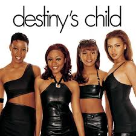
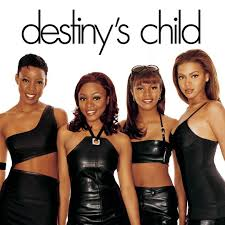

about me
Following the break-up of Destiny's Child in 2006, she released her second solo album, B'Day (2006), which contained her fourth number-one single, "Irreplaceable", as well as the top ten singles "Déjà Vu", and "Beautiful Liar". Beyoncé also continued her acting career, with starring roles in The Pink Panther (2006), Dreamgirls (2006), and Obsessed (2009). Her marriage to rapper Jay-Z and portrayal of Etta James in Cadillac Records (2008) influenced her third album, "I Am... Sasha Fierce" (2008), which saw the introduction of her alter-ego Sasha Fierce and earned a record-setting six Grammy Awards in 2010, including Song of the Year for "Single Ladies (Put a Ring on It)". Beyoncé took a hiatus from music in 2010 and took over management of her career; her fourth album 4 (2011) was subsequently mellower in tone, exploring 1970s funk, 1980s pop, and 1990s soul. Her critically acclaimed eponymous album, released in 2013 with no prior announcement, was distinguished from previous releases by its experimental production and exploration of darker themes. Her sixth album, "Lemonade" (2016), also received widespread critical acclaim, with many referring to it as her most personal and political work to date, and subsequently became the best-selling album of 2016. In 2018, she released Everything Is Love, a collaborative album with husband Jay-Z, as The Carters.
Throughout her career, Beyoncé has sold over 100 million records worldwide as a solo artist, and a further 60 million records with Destiny's Child, making her one of the best-selling music artists of all time. She is a multi-platinum, Grammy-Award studio recording artist who's acclaimed for her thrilling vocals, videos, and live concert shows. The Recording Industry Association of America recognized Beyoncé as the Top Certified Artist in America during the 2000s decade. In 2009, Billboard named her the Top Radio Songs Artist of the Decade and the Top Female Artist of the 2000s decade. Among numerous awards and accolades, Beyoncé has won 23 Grammy Awards and is the most nominated woman in the award's history. She is also the most awarded artist at the MTV Video Music Awards, with 24 wins, including the Michael Jackson Video Vanguard Award. In 2008, she was and awarded the Legend Award for Outstanding Contribution to the Arts at the World Music Awards. In 2011, Beyoncé was presented with the inaugural Millennium Award at the Billboard Music Awards. In 2014, she became the highest-paid black musician in history and was listed among Time's 100 most influential people in the world for a second year in a row. Forbes ranked her as the most powerful female in entertainment on their 2015 and 2017 lists, and in 2016, she occupied the sixth place for Time's Person of the Year. In 2016, she was awarded the Fashion Icon lifetime achievement award from the Council of Fashion Designers of America. With the release of Lemonade, Beyoncé became the first and only musical act in Billboard chart history to debut at number one with their first six solo studio albums.
my photos


 

my playlist
give me a like
scan my code
ans
Q1
Web 1.0:
Web 1.0 is the first generation of web. Web 1.0 was consider as read-only web with very little interaction where consumer can exchange the information together but it was not possible to interact with the website. In Web 1.0 search engines retrieve macro contents. Search is very fast but many times results are inaccurate or more than users can chew. Web 1.0 was all about static content, one way publishing of content without any real interaction between readers or publishers or each other.
Web 2.0:
Web 2.0 is considered as read-write web. Web 2.0 allows managing and assembling large global crowd with common interests in social interaction. Web 2.0 facilitates participatory, collaborative, and distributed practices which enable formal and nonformal spheres of daily activities. The user of web2.0 has more interaction with less control. In Web 2.0 search engines retrieve tags with micro contents. The process of tagging is manual, tedious and covers negligible percents of the WWW. Web 2.0 tags everything: pictures, links, events, news, Blogs, audio, video, and so on. Web 2.0 is more about 2 way communication through social networking, blogging, wikis, tagging, user generated content and video.
Web 3.0:
Web 3.0 usually conjectured to include semantic tagging of content, Is considered as Read, Write and execute web. Is also known as the Semantic Web The foundation of the Semantic Web is data integration. Web3.0 supports world wide database and web oriented architecture which in earlier stage was described as a web of document. It deals mainly with static HTML documents, but dynamically rendered pages and alternative formats should follow the same conceptual layout standards whenever possible and links are between documents or part of them. In Web 3.0 search engines will hopefully retrieve micro content texts which were tagged automatically. Web 3.0 is curiusly undefined. AI and the web learning what you want and delivering you a Personalized web experience.